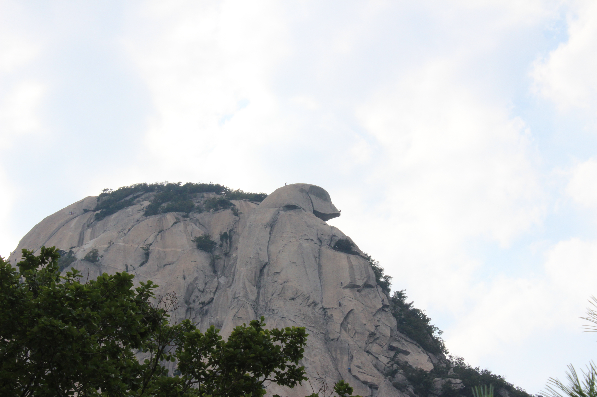
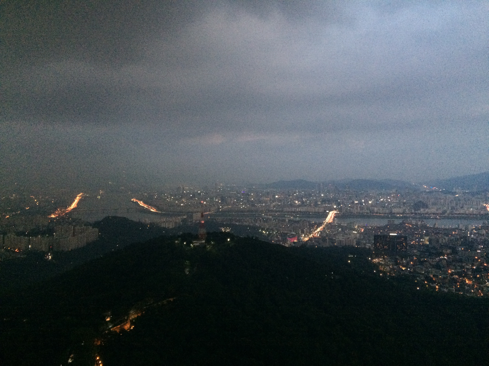
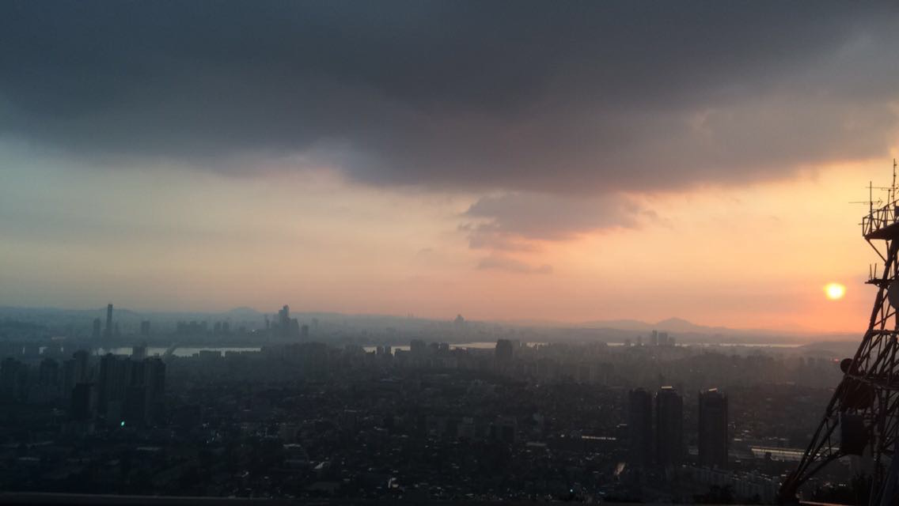

Here are pictures and videos and a bit of text documenting my time. (Most recent at the top)
December 20 - Korea--> US
I left Seoul 20 minutes from now. - I'm in Washington, D.C. now. It's bitter sweet to be home.
I left Seoul 20 minutes from now. - I'm in Washington, D.C. now. It's bitter sweet to be home.
September 25-29 - Chuseok - Ulleungdo
I spent Korean Thanksgiving, Chuseok, on the volcanic island Ulleungdo. Ulleungdo is a three hour ferry ride into the Pacific Ocean, to the East of Korea. The island is only about 7.5 miles wide, making the circumference ~ 50 miles. I'd love to hike around it someday.
I spent Korean Thanksgiving, Chuseok, on the volcanic island Ulleungdo. Ulleungdo is a three hour ferry ride into the Pacific Ocean, to the East of Korea. The island is only about 7.5 miles wide, making the circumference ~ 50 miles. I'd love to hike around it someday.

We spent 4 days on the island, which were filled with exploring, jumping and swimming in crystal clear water, and eating squid. Squid is the staple of the Ulleungdo local's diet.

These are some of my favorite shots from the island :)


August 30 - Went up Baegundae in the Bukhansan National Park today with some other international students, Jacob, Diana, Marcus, Rebecca, and Micheala.
The korean term for international students sounds like "u hawksing"
Bukhansan National Park is a beautiful park right ontop of Seoul. It's a crazy contrast between beautiful peaks and a massive sprawling city.
The korean term for international students sounds like "u hawksing"
Bukhansan National Park is a beautiful park right ontop of Seoul. It's a crazy contrast between beautiful peaks and a massive sprawling city.

We stopped at a Buddhist Temple on the way up.


Some climbers on a "face".

August 29 - In one of the universities with Jacob & Rebecca
August 28 - A view of Seoul from Namsan Mountain + Tower

